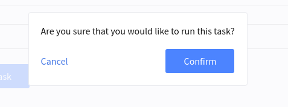

Custom Tasks#
Lagoon allows for the definition of custom tasks at environment, project, and group levels. This is presently accomplished through the GraphQL API and exposed in the UI.
Defining a custom task#
When defining a task you need to determine a number of things.
Which task do you want to run?#
In most cases, the custom task you will be running will be something that will be run in a shell on one of the containers in your application.
For instance, in a Node.js application, you may be interested in running a yarn audit in your node container. The command, in this case, would simply be yarn audit.
Where will this task be run?#
We have to define where this task will be run -- this means two things, first, which project or environment we'll be running the task in, and, second, which service.
Let's say that we'd like for our yarn audit task to be available to run in any environment in a specific project (let's say the project's ID is 42 for this example). We will therefore specify the project's ID when we create our task definition, as we will describe below.
The second question regards which environment we want to target with our task. When you set up your project, you specify several services in your docker-compose.yml. We use this service name to determine where the command is actually executed.
Who can run this task?#
There are three levels of permissions to the task system corresponding to project roles. Guest, Developer, and Maintainer -- from most restrictive to least restrictive, with each role being able to invoke the tasks defined for the lower role (Developer can see Guest tasks, Maintainers can see all tasks).
Defining a task#
Tasks are defined by calling the addAdvancedTaskDefinition mutation. Importantly, this simply defines the task, it does not invoke it. It simply makes it avaliable to be run in an environment.
Schematically, the call looks like this
mutation addAdvancedTask {
addAdvancedTaskDefinition(input:{
name: string,
confirmationText: string,
type: [COMMAND|IMAGE],
[project|environment]: int,
description: string,
service: string,
command: string,
advancedTaskDefinitionArguments: [
{
name: "ENVIROMENT_VARIABLE_NAME",
displayName: "Friendly Name For Variable",
type: [STRING | ENVIRONMENT_SOURCE_NAME | ENVIRONMENT_SOURCE_NAME_EXCLUDE_SELF]
}
]
}) {
... on AdvancedTaskDefinitionImage {
id
name
description
service
image
confirmationText
advancedTaskDefinitionArguments {
type
range
name
displayName
}
...
}
... on AdvancedTaskDefinitionCommand {
id
name
description
service
command
advancedTaskDefinitionArguments {
type
range
name
displayName
}
...
}
}
}
Fields name and description are straightforward. They're simply the name and description of the task - these are used primarily in the UI.
The type field needs some explanation - for now, only platform admins are able to define IMAGE type commands - these allow for the running of specifically created task images as tasks, rather than targeting existing services. Most tasks, though, will be COMMAND types.
The [project|environment] set of fields will attach the task to either the project or environment (depending on the key you use), with the value being the id. In the case we're considering for our yarn audit we will specify we're targeting a project with an ID of 42.
We put the service we'd like to target with our task in the service field, and command is the actual command that we'd like to run.
Arguments passed to tasks#
In order to give more flexibility to the users invoking the tasks via the Lagoon UI, we support defining task arguments. These arguments are displayed as text boxes or drop downs and are required for the task to be invoked.
Here is an example of how we might set up two arguments.
advancedTaskDefinitionArguments: [
{
name: "ENV_VAR_NAME_SOURCE",
displayName: "Environment source",
type: ENVIRONMENT_SOURCE_NAME
},
{
name: "ENV_VAR_NAME_STRING",
displayName: "Echo value",
type: STRING
}
]
})
This fragment shows both types of arguments the system currently supports.
The first, ENV_VAR_NAME_SOURCE is an example of type ENVIRONMENT_SOURCE_NAME, which will present the user of the UI a dropdown of the different environments inside of a project. If we don't want to allow the task to be run on the invoking environment (say, if we want to import a database from another environment), we can restrict the environment list by using ENVIRONMENT_SOURCE_NAME_EXCLUDE_SELF.
The second ENV_VAR_NAME_STRING is of type STRING and will present the user with a textbox to fill in.
The values that the user selects will be available as environment variables in the COMMAND type tasks when the task is run.

System wide tasks#
Platform administrators are able to register system wide tasks. These tasks will appear for all environments, subject to the user's permission to invoke them.
Creating a system wide task is almost exactly the same as other task types, with two exceptions.
First, you set the systemWide: true field in your addAdvancedTaskDefinition mutation.
Second, you make sure you have not specified groupName, project, or environment - which would defeat the purpose, since these fields are used to target specific contexts.
Confirmation#
When the confirmationText field has text, it will be displayed with a confirmation modal in the UI before the user is able to run the task.

Invoking the task#
With the task now defined, the task should now show up in the tasks dropdown in the Lagoon UI.
We are also able to invoke it via the GraphQL api by using the invokeTask mutation.
mutation invokeTask {
invokeRegisteredTask(advancedTaskDefinition: int, environment: int) {
status
}
}
Note that invokeTask will always invoke a task on a specific environment.
Example#
Let's now setup our yarn audit example.
mutation runYarnAudit {
addAdvancedTaskDefinition(input:{
name:"Run yarn audit",
project: 42,
type:COMMAND,
permission:DEVELOPER,
description: "Runs a 'yarn audit'",
service:"node",
command: "yarn audit"})
{
id
}
}
This, then, will define our task for our project (42). When we run this, we will get the ID of the task definition back (for argument's sake, let's say it's 9)
This task will now be available to run from the UI for anyone with the DEVELOPER or MAINTAINER role.